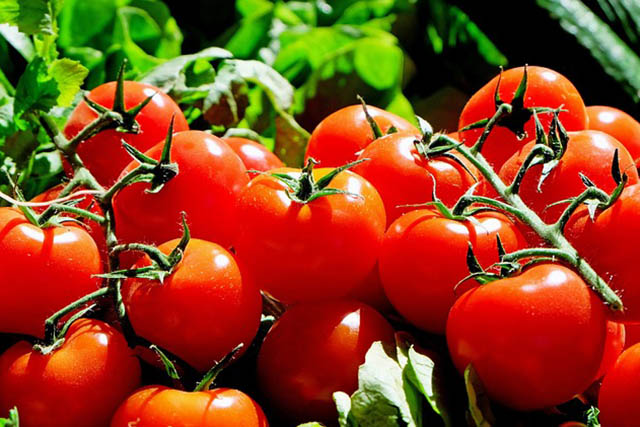
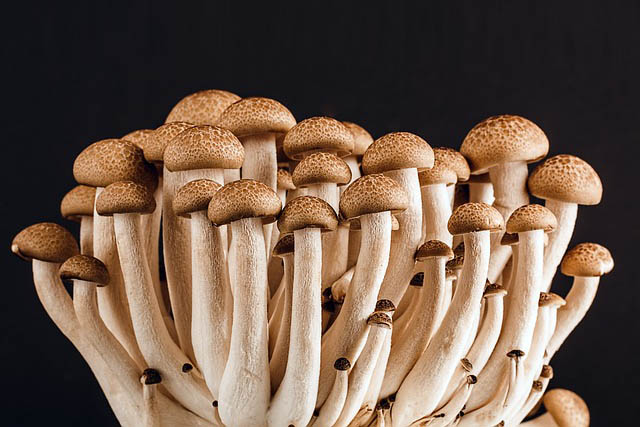
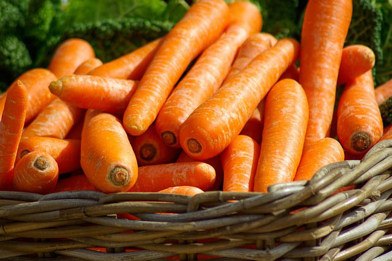

特級蔔萄
品味無比的特級葡萄，風味濃郁、口感豐富，來自精心挑選的優質葡萄園，每一口都是尊榮的享受。

番茄
色彩豐富的蕃咖，營養豐富。烹調多變，滿足您的美食期待。不同料理方式都散發著獨特風味，帶給您美好的體驗。

磨菇
精選新鮮磨菇，營養豐富，口感鮮嫩。烹調多樣化，滿足您的味蕾。健康的選擇，每一道料理都更美味。
咖啡豆
精選高品質咖啡豆，風味濃郁香醇。經精心烘焙，每一口都是對品味的追求。享受純正咖啡的悠閒時光。

胡蘿蔔
新鮮多汁的胡蘿蔔，富含維生素與纖維，為您的健康提供天然的營養源。美味色香，打造健康生活。